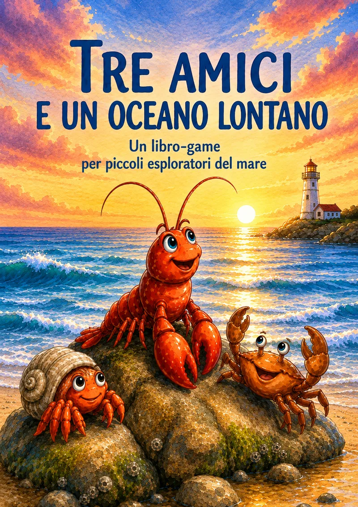

Storie per bambini, scritte con loro
“Papi, mi leggi un libro?”
A questa domanda, rispondo inventando storie. Viaggi in giro per il mondo, animali incredibili, avventure piene di colpi di scena e mistero. Ora quelle storie, nate con i miei due bambini, stanno diventando libri veri.
Chi sono
Per lavoro scrivo codice.
Per passione, storie.
Sono un ingegnere e programmatore: passo le giornate a trasformare idee in software, a scomporre problemi grandi in pezzi piccoli e a cercare la soluzione più elegante e funzionale.
Ma soprattutto sono il papà di due bambini. Durante una gita in montagna, a tavola, aspettando la cena o prima di dormire: vogliono sempre una storia nuova. Con dentro i loro personaggi, le loro idee e i loro colpi di scena.
Così abbiamo iniziato a inventarle insieme. Un giorno ho capito che era un peccato lasciarle svanire: meritavano di essere scritte, illustrate e condivise.
const momenti = ["in montagna", "a tavola",
"prima di cena", "prima di dormire"];
for (const momento of momenti) {
const idea = bambini.chiedi("e poi?");
storia.aggiungi(idea);
papà.improvvisa();
}
// e appena c’è un momento libero…
libro.scrivi(storia);Il metodo
Come nasce una storia
Un processo iterativo, proprio come nello sviluppo software. Solo più divertente e con più merende.
-
01
La scintilla
Un bambino lancia un’idea: “E se un gatto sapesse volare?”
-
02
L’improvvisazione
Si costruisce insieme, un pezzettino alla volta.
-
03
Gli appunti
Prima che la magia svanisca, annoto tutto (o quasi).
-
04
Il libro
Riscrivo, rileggo con loro, correggo. Quando i piccoli editor approvano, la storia è pronta.
I libri